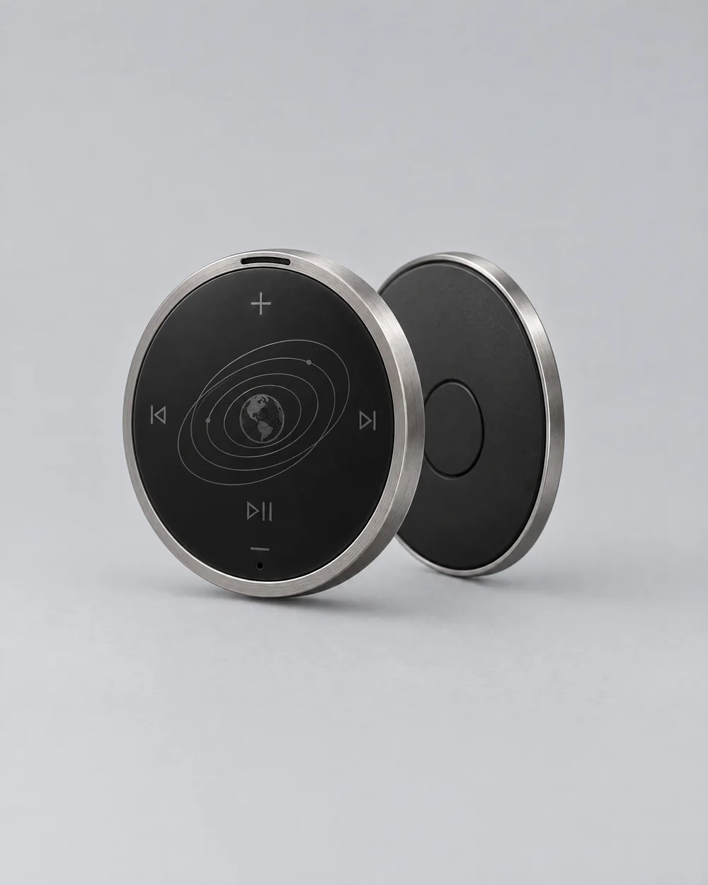
Module 01
Comm
$99
- About one inch across. Slim profile.
- Touch controls: play/pause, volume, track skip
- Answer and end calls
- Built-in speaker and microphone
- Bluetooth
- Magnetic clip
Flagship 001 · Numbered run · Pre-order open
Spacewear built from the logic of the pressure suit, for everyday life on Earth.
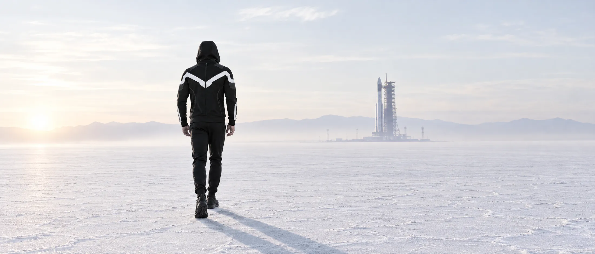
Suit logic
Six systems from pressure-suit design, carried into a jacket you wear to work. Select a point.
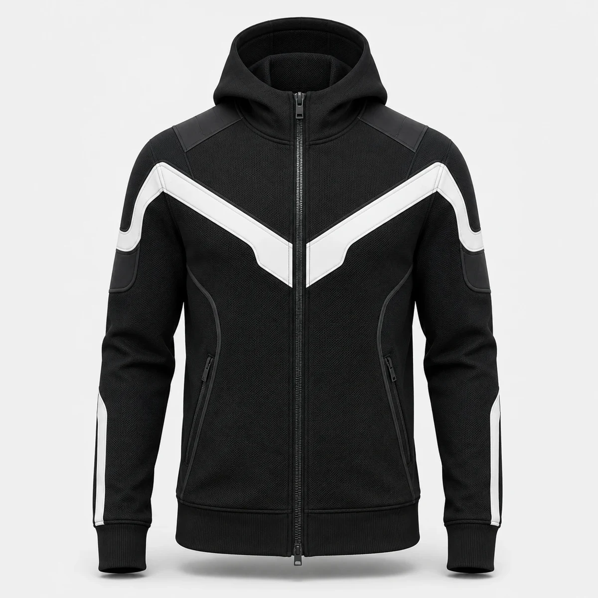
Suit High-contrast panels read at a distance and show orientation.
Earth Easy to spot in low light and from across the road.
Suit Shoulders and arms take the load and the wear.
Earth Panels where bag straps and friction land.
Suit Tools stay within reach and stay closed.
Earth Phone, keys and card secured, hands free.
Suit Long closures make donning and doffing a procedure.
Earth Open it fully or only to the chest.
Suit Suits seal at the neck.
Earth A high collar and a hood that sits close.
Suit Suits seal at wrist and waist.
Earth Ribbed cuffs and hem hold the fit.
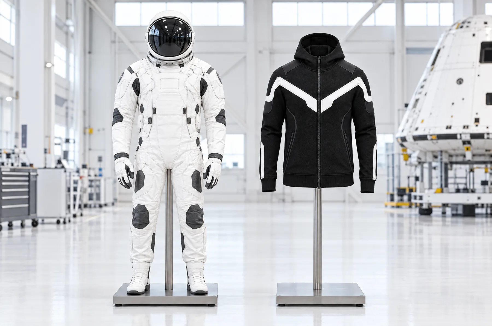
From the hangar
to the street.
Same logic.
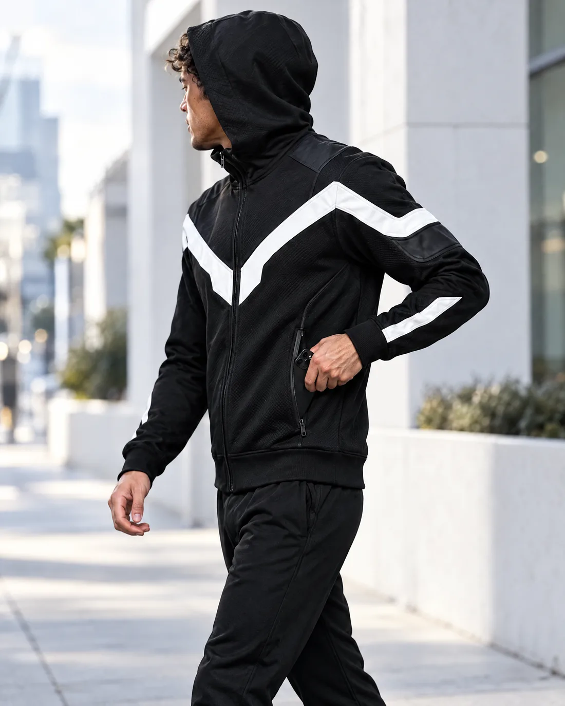
Mission profile
Zip. Hood up.
Phone, keys and card stowed. Tap the comm to take a call.
Collar down. Zip to the chest.
Beacon on. Same jacket, different light.
Hang it up. Repeat.
Modules · Sold separately
Magnetic modules that clip onto the jacket. A comm badge for calls and audio. A beacon for low light.
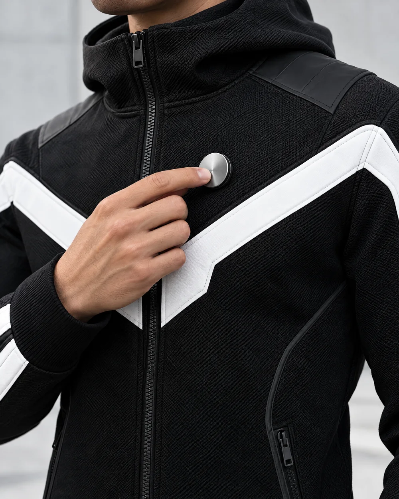

Module 01
$99
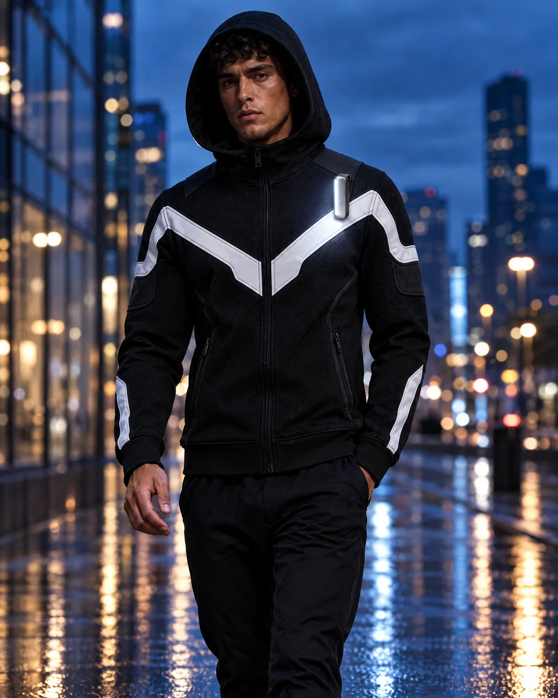
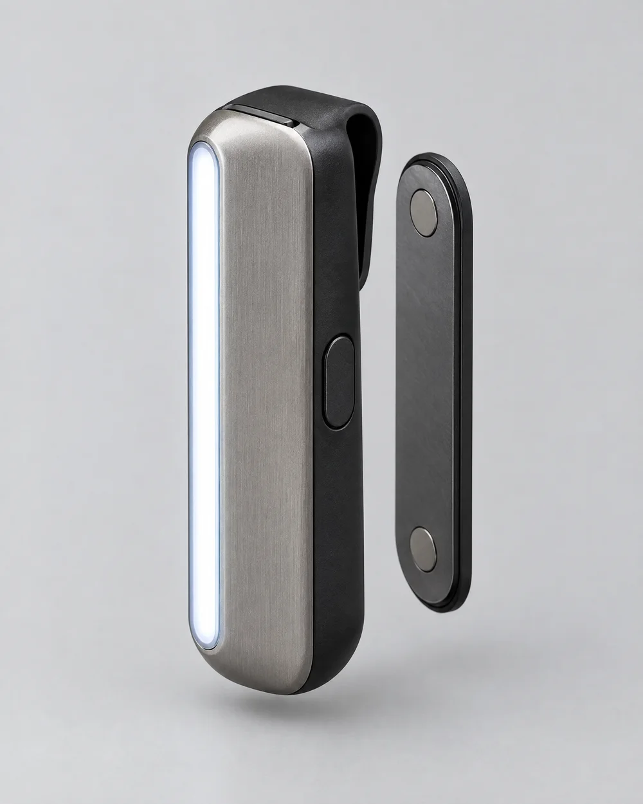
Module 02
$49
Flagship 001 · Threshold pre-order
Made only if 50 are ordered. Each piece is numbered and ships with a certificate of authenticity. Charged at order. Refunded in full to everyone if the threshold is not met by the deadline.
Reserve · $199Closes
Campaign closed.
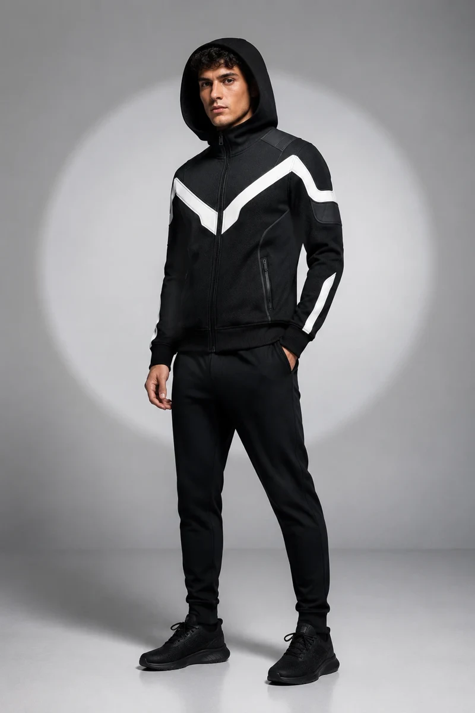
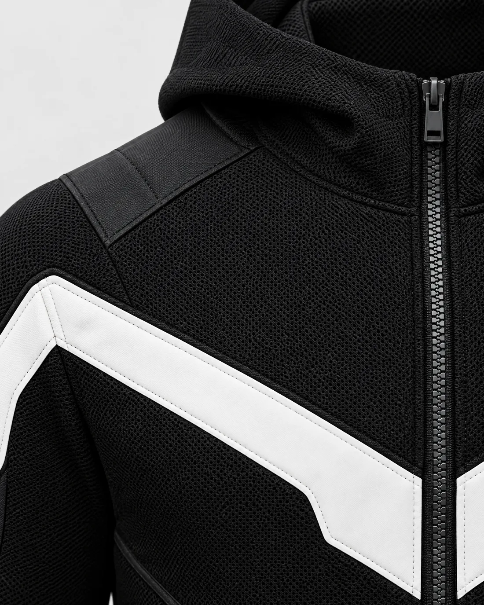
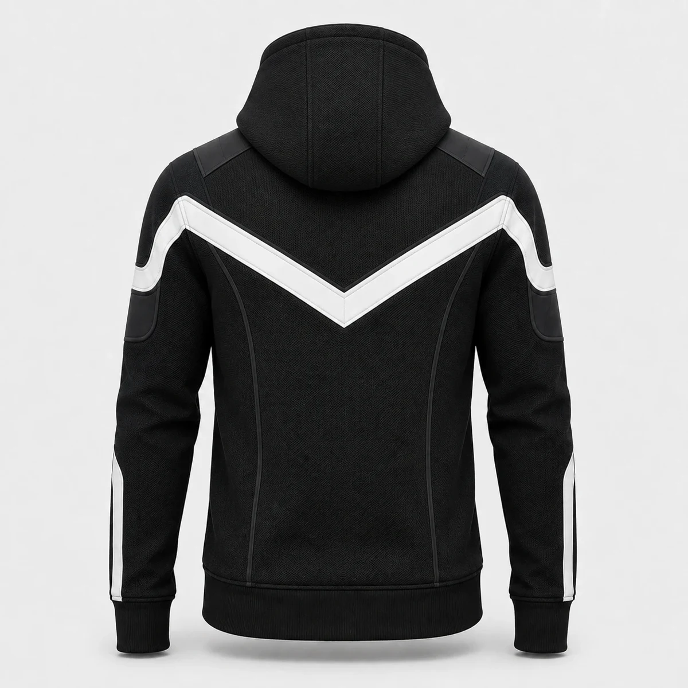
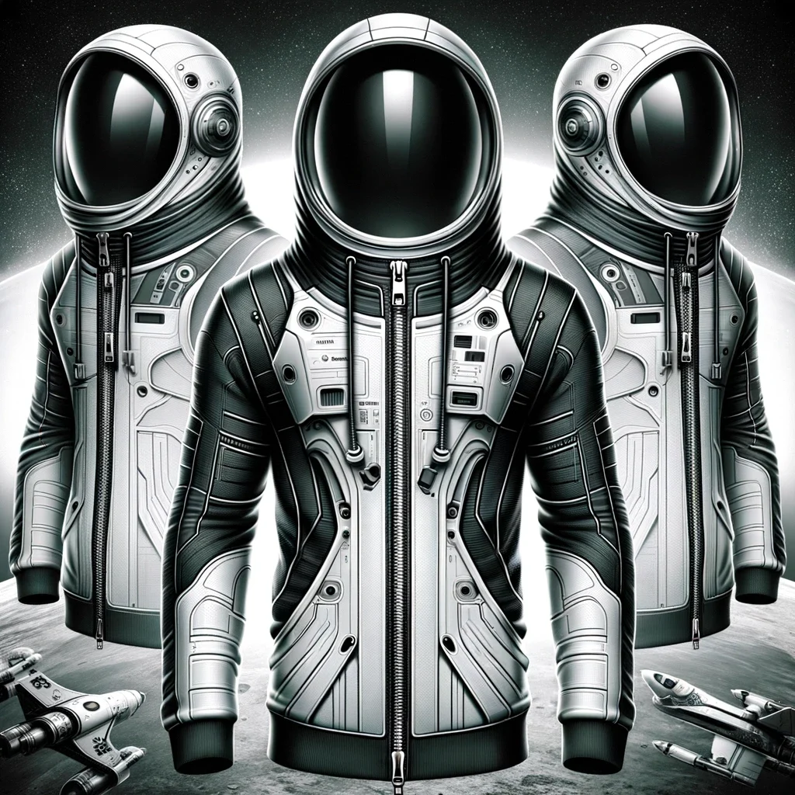
Why the name
verb · /dɒn/
To put on the suit. The first act of every mission.
verb · /dɒf/
To take it off. The last.
NASA-STD-3001, requirement V2 11001: Suited Donning and Doffing.
1966
A NASA technical note describes a suit design approach followed to simplify donning and doffing.
2017
Life support budgeted for 8-hour EVAs, plus 2 hours of donning and doffing.
Now
NASA's human spaceflight standard requires efficient and effective donning and doffing.